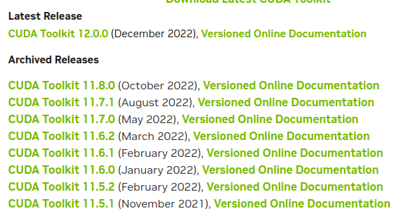
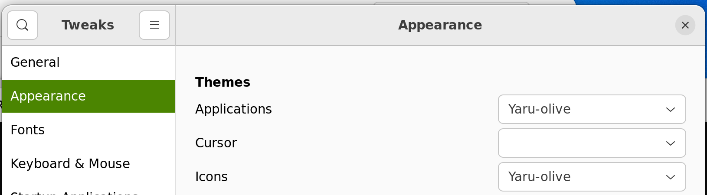
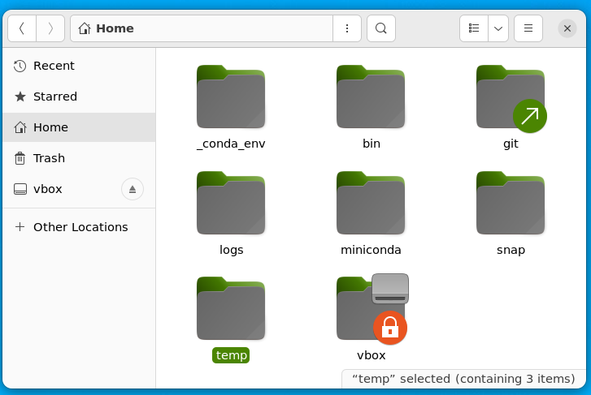

#my vbox.autofs file
!cat /etc/vbox.autofsjanus -fstype=drvfs,uid=1000,gid=1000 :Z:As an example from T15Gen2, corporate mastered.
This procedure needs admin rights on 2 steps (install nvidia drivers, activate wsl)
And if based on WSL from Windows store (wsl --version>=1.0), lots of new features such as systemd, snap, integrated display, etc. Detailed in WSL2 from Windows Store
Just install Windows Terminal from Windows Store at https://aka.ms/terminal
To get drivers in link to cuda versions:
https://developer.nvidia.com/cuda-toolkit-archive

(Jan-18 23: cuda 11.7.1 using cuda_11.7.1_516.94_windows.exe)
+-----------------------------------------------------------------------------+
| NVIDIA-SMI 515.65.01 Driver Version: 516.94 CUDA Version: 11.7 |
|-------------------------------+----------------------+----------------------+
| GPU Name Persistence-M| Bus-Id Disp.A | Volatile Uncorr. ECC |
| Fan Temp Perf Pwr:Usage/Cap| Memory-Usage | GPU-Util Compute M. |
| | | MIG M. |
|===============================+======================+======================|
| 0 NVIDIA GeForce ... On | 00000000:01:00.0 On | N/A |
| N/A 54C P8 18W / N/A | 274MiB / 16384MiB | 1% Default |
| | | N/A |
+-------------------------------+----------------------+----------------------+Download from https://cloud-images.ubuntu.com/daily/server/wsl/
This address may change (search for « cloud wsl ubuntu images »)
(Dec-22: this file ubuntu-jammy-wsl-amd64-wsl.rootfs.tar.gz)
as admin, install the driver
as admin, open windows terminal, and run
wsl --install
wsl --set-default-version 2I am closely following new updates from WSL and WSLg at https://github.com/microsoft/WSL/releases
To know which version we use, run wsl --version in Powershell.
And to upgrade to the latest version, run wsl --update --pre-release
following instructions from install ubuntu 22.04 on WSL # Automatic setup.
And here are the steps
Create 2 folders: C:\wsl\Ubuntu-22.04\download, C:\wsl\Ubuntu-22.04\instance
Move ubuntu-jammy-wsl-amd64-wsl.rootfs.tar.gz in C:\wsl\Ubuntu-22.04\download
Copy scripts setup_wsl_root.sh and setup_wsl_user.sh to C:\wsl\Ubuntu-22.04\download
Copy wsl-vpnkit to C:\wsl\Ubuntu-22.04\download (see https://dev.michelin.com/wsl2/fundamentals for more details)
Install wsl-vpnkit from Windows Terminal:
wsl --import wsl-vpnkit $env:USERPROFILE\wsl-vpnkit C:\wsl\ubuntu-22.04\download\wsl-vpnkit.tar.gz
wsl -d wsl-vpnkit
wsl -d wsl-vpnkit service wsl-vpnkit startInstall ubuntu-lts from Windows Terminal:
wsl --import ubuntu-22.04 C:\wsl\ubuntu-22.04\instance C:\wsl\ubuntu-22.04\download\ubuntu-jammy-wsl-amd64-wsl.rootfs.tar.gz
# close windows terminal / launch it (ubuntu-22.04 entry should be added within it)
wsl -d ubuntu-22.04 # or launch from Windows Terminal menu
cd
cp /mnt/c/wsl/Ubuntu-22.04/download/setup_wsl_* ~/
chmod +x setup_wsl_root.sh
./setup_wsl_root.shProvide username, password and quit session with Ctrl-D
From Windows Terminal, stop wsl with wsl -t ubuntu-22.04, a new profile for ubuntu-22.04 should have been automatically created in Windows Terminal
Start ubuntu-22.04 by clicking the profile in Windows Terminal
Should start with something like

Step 2: accept default entries (type enter). Add the generated key to gitlab > preferences > SSH keys. And then resume.
At that stage this is a fully operating image of ubuntu (internet, apt)
If running wsl version > 1.0, you can activate systemd
Modify /etc/wsl.conf with
[boot]
systemd=trueAnd restart wsl image (wsl -t ubuntu-22.04)
Test that it works by running
systemctl list-unit-files --type=service
I have explained how and why to do this step at keep dotfiles in git
wget --no-check-certificate --content-disposition -O - https://raw.githubusercontent.com/castorfou/blog/master/files/setup_wsl_00_config_files_in_git.sh | bash
source ~/.bashrcTODO: take branch name as a parameter. Meanwhile download the script and update branch name to something new
This is explained at git-credential-manager repo
wget --no-check-certificate --content-disposition -O - https://raw.githubusercontent.com/castorfou/blog/master/files/setup_wsl_06_git_credential_manager.sh | bashYou need to create a personal access token in github.
And when pushing to a github repo, use this token as the password
Because I keep secured data within my secured disks mounted in windows (Z:, Y:, …)
wget --no-check-certificate --content-disposition -O - https://raw.githubusercontent.com/castorfou/blog/master/files/setup_wsl_01_automount_secured_vbox.sh | bashModify /etc/vbox.autofs to match your actual mounted disks. sudo service autofs start to start the service.
if it fails, check that kernel is at least v5. uname -a. If not maybe in WSL 1 insted of WSL 2? (sudo automount -f -v should provide more information)
#my vbox.autofs file
!cat /etc/vbox.autofsjanus -fstype=drvfs,uid=1000,gid=1000 :Z:if systemd is activated, we can manage services with journalctl
#restart autofs
sudo systemctl restart autofs.service
#read logs for autofs (-r: display last entries first)
#to use it as user, add your user to adm group
#sudo usermod -a -G adm <your_username>
journalctl -r -u autofs
#print warning
journalctl -r -p warningother examples with journalctl:
https://www.geeksforgeeks.org/journalctl-command-in-linux-with-examples/
Give a look to script sources
# install miniconda
wget --no-check-certificate --content-disposition -O - https://raw.githubusercontent.com/castorfou/blog/master/files/setup_wsl_02_install_python_conda_part1.sh | bash
source ~/.bashrc
# install mamba
wget --no-check-certificate --content-disposition -O - https://raw.githubusercontent.com/castorfou/blog/master/files/setup_wsl_02_install_python_conda_part2.sh | bash
source ~/.bashrc
# install certificates for Python
wget --no-check-certificate --content-disposition -O - https://raw.githubusercontent.com/castorfou/blog/master/files/setup_wsl_02_install_python_conda_part3.sh | bash
source ~/.bashrc
# create base_jupyter environment
wget --no-check-certificate --content-disposition -O - https://raw.githubusercontent.com/castorfou/blog/master/files/setup_wsl_02_install_python_conda_part4.sh | bash
source ~/.bashrcGive a look to script sources
wget --no-check-certificate --content-disposition -O - https://raw.githubusercontent.com/castorfou/blog/master/files/setup_wsl_08_pip.sh | bashIn order to preserve base environment, I won’t install anything in it.
I will create a base_jupyter env with what is needed for running jupyter lab. And create a jupyterlab service to automatically start jupyter lab with my distro (and stop/restart it)
base_jupyter
!cat /home/guillaume/_conda_env/base_jupyter.txtconda remove --name base_jupyter --all
mamba create -n base_jupyter python=3.9
conda activate base_jupyter
mamba install -c conda-forge jupyterlab
mamba install -c conda-forge ipywidgets
jupyter labextension install jupyterlab-plotly
jupyter-lab --generate-config
# in .jupyter/jupyter_lab_config.py
# replace # c.ServerApp.use_redirect_file = True
# with c.ServerApp.use_redirect_file = False
# or get it from gitlab/JANUS/dotfiles
mamba install -c conda-forge jupyterlab_execute_time
pip install azure-clijupyterlab as a service:
FILE /etc/systemd/system/jupyterlab.service
[Unit]
Description=Jupyter lab boot scriptJupyter lab boot script
DefaultDependencies=no
After=network.target
[Service]
Type=simple
User=guillaume
Group=adm
1Environment="LD_LIBRARY_PATH=/usr/lib/wsl/lib"
ExecStart=/home/guillaume/bin/jupyterlab.sh
ExecStop=screen -X -S jupyter_screen kill
TimeoutStartSec=0
RemainAfterExit=yes
[Install]
WantedBy=default.target!cat /home/guillaume/bin/jupyterlab#!/bin/bash
cd ~
source ~/miniconda/etc/profile.d/conda.sh
conda activate base_jupyter
jupyter lab!cat /home/guillaume/bin/jupyterlab.sh#!/bin/bash -x
screen -d -S "jupyter_screen" -m ~guillaume/bin/jupyterlab!cat /home/guillaume/bin/jupyterlab_stop.sh#!/bin/bash -x
screen -X -S jupyter_screen killThen enable this service
chmod +x /home/guillaume/bin/jupyterlab.sh
sudo systemctl daemon-reload
sudo systemctl enable jupyterlab.service
sudo systemctl restart jupyterlab.serviceand to monitor logs of this service
journalctl -xefu jupyterlabJust pointing to http://localhost:8888/lab
and if you want we can add an alias alias jl='/home/guillaume/bin/jupyterlab.sh' in .bash_aliases
following https://medium.com/@satriajanaka09/setup-zsh-oh-my-zsh-powerlevel10k-on-ubuntu-20-04-c4a4052508fd
Install zsh
sudo apt install zsh
zsh --version
#set as default shell for current user
chsh -s /usr/bin/zshSome settings to be set to start wsl-vpnkit with my user with zsh.
tee ~/.zprofile << EOF
emulate sh
. ~/.profile
emulate zsh
EOFHere I have to restart ubuntu and wsl-vpnkit. (from powershell wsl --shutdown) and check network is fine (e.g. wget https://wwww.google.com)
Install oh-my-zsh
sh -c "$(curl -fsSL https://raw.githubusercontent.com/ohmyzsh/ohmyzsh/master/tools/install.sh)"Switch to other theme - agnoster Change ZSH_THEME=“agnoster” And apply change exec zsh
Install fonts
sudo apt-get install fonts-powerline
Load bash aliases
tee -a ~/.zshrc << EOF
source $HOME/.bash_aliases
EOFUpdate PATH and other variables
tee -a ~/.zshrc << EOF
export OPENSSL_CONF=/etc/ssl/openssl.cnf
sudo /usr/sbin/service autofs start
export REQUESTS_CA_BUNDLE=/etc/ssl/certs/ca-certificates.crt
export SSL_CERT_FILE=/home/guillaume/miniconda/lib/python3.9/site-packages/certifi/cacert.pem
export BROWSER='chrome.exe'
export PATH=$PATH:"/mnt/c/Program Files/Google/Chrome/Application:/home/guillaume/miniconda/condabin:/usr/local/sbin:/usr/local/bin:/usr/sbin:/usr/bin:/sbin:/bin:/usr/games:/usr/local/games:/usr/lib/wsl/lib:/mnt/c/Program Files (x86)/Java/jre8/bin:/mnt/c/ProgramData/Oracle/Java/javapath:/mnt/c/WINDOWS/system32:/mnt/c/WINDOWS:/mnt/c/WINDOWS/System32/Wbem:/mnt/c/WINDOWS/System32/WindowsPowerShell/v1.0:/mnt/c/WINDOWS/System32/OpenSSH:/mnt/c/Program Files/SafeNet/Authentication/SAC/x64:/mnt/c/Program Files/SafeNet/Authentication/SAC/x32:/mnt/c/Program Files (x86)/NVIDIA Corporation/PhysX/Common:/mnt/c/Users/f279814/AppData/Local/Microsoft/WindowsApps:/snap/bin:/home/guillaume/bin"
export PATH=$PATH:"/mnt/c/Users/f279814/AppData/Local/Programs/Microsoft VS Code/bin"
export GPG_TTY=$(tty)
export DISPLAY=:0
# Could not load library libcudnn_cnn_infer.so.8. Error: libcuda.so: cannot open shared object file: No such file or directory
export LD_LIBRARY_PATH=/usr/lib/wsl/lib
EOFDouble check PATH env
Install power10klevel
git clone --depth=1 https://github.com/romkatv/powerlevel10k.git ${ZSH_CUSTOM:-$HOME/.oh-my-zsh/custom}/themes/powerlevel10kand update in .zshrc ZSH_THEME="powerlevel10k/powerlevel10k"
Install fonts for power10klevel https://github.com/romkatv/powerlevel10k#manual-font-installation
Could need installation of font-manager sudo apt install font-manager And install them in windows as well to have it properly rendered in Windows Terminal https://sicse.dev/blog/wsl-2-prompt-powerlevel10k-theme
Manually configure or get a version from dotfiles
Install plugins
#zsh autosuggestions
git clone https://github.com/zsh-users/zsh-autosuggestions ${ZSH_CUSTOM:-~/.oh-my-zsh/custom}/plugins/zsh-autosuggestions
#zsh syntax highlighting
git clone https://github.com/zsh-users/zsh-syntax-highlighting.git ${ZSH_CUSTOM:-~/.oh-my-zsh/custom}/plugins/zsh-syntax-highlighting
and in .zshrc
plugins=(git zsh-autosuggestions zsh-syntax-highlighting python history)based on wsl version >= 1.0.
Upgrade snap
sudo apt-get -y upgrade snapdCheck it is running
$ snap list
Name Version Rev Tracking Publisher Notes
core20 20220318 1405 latest/stable canonical✓ base
lxd 5.0.0-b0287c1 22923 5.0/stable/… canonical✓ -
snapd 2.55.3 15534 latest/stable canonical✓ snapdAnd install firefox
sudo snap install firefox
# due to a bug when opening settings
# https://answers.launchpad.net/ubuntu/+question/701403https://answers.launchpad.net/ubuntu/+question/701403
sudo apt install xdg-desktop-portal-gtkTo allow external websites, import this certificate /usr/local/share/ca-certificates/cert_M_X5C_sase-mob-sslfwd-trust-ca.crt in the certificate manager

And install nautilus
sudo apt install nautilus nautilus-extension-gnome-terminal
I like this text editor even if it is not exactly opensource.
I may even buy a license later.
Anyway I will use the snap version
sudo snap install sublime-text --classicand because of this issue from WSLg WSL some icons in taskbar for linux applications are defaulting to Tux, I add this
cd /var/lib/snapd/desktop/applications
sudo ln -s sublime-text_subl.desktop sublime_text.desktop
cd ~/bin
touch sublime_text
chmod +x sublime_text
tee sublime_text << EOF
#!/bin/bash
env BAMF_DESKTOP_FILE_HINT=/var/lib/snapd/desktop/applications/sublime-text_subl.desktop /snap/bin/sublime-text.subl --launch-or-new-window
EOFLaunching sublime_text in command line should open sublime_text with matching icon in taskbar. The same when right clicking a text file in nautilus and editing with sublime text.
sudo add-apt-repository univ
sudo apt-get -y install gnome-tweaks
sudo apt-get -y install yaru-theme-gtk
sudo apt-get -y install yaru-theme-icon
And impact on nautilus is directly visible

tilix is a terminal with split windows integrated (as with tmux or screen or vi)
sudo apt install tilixuse zsh / powerlevel10k fonts sandwich > Preferences > Profiles / Default > Text Appearance / Custom Font > MesloLGS NF Regular
update Copy/Paste shortcuts sandwich > Preferences > Shortcuts > Copy (Ctrl-C) and Paste (Ctrl-V) as for other terminals, interrupt is now Shift-Ctrl-C
vte config as explained in https://gnunn1.github.io/tilix-web/manual/vteconfig/ add this in .zshrc
if [ $TILIX_ID ] || [ $VTE_VERSION ]; then
source /etc/profile.d/vte.sh
fiand create this symlink
ln -s /etc/profile.d/vte-2.91.sh /etc/profile.d/vte.shAnd install gimp
sudo apt install gimpsnap find zotero
Name Version Publisher Notes Summary
zotero-snap 6.0.18 extraymond - Zotero helps you collect, organize, cite, and share research.
qnotero 2.3.1 ealbiter - Standalone sidekick to Zotero reference manager.
zotviewer 1.5.0 fvalle - Zotero Visualizer
sudo snap install zotero-snap
zotero-snap 6.0.18 from extraymond installedand there is something to do to activate sync: https://github.com/extraymond/zotero-snap/issues/29
FIREFOX_PROFILE=`find ~/snap/firefox/common/.mozilla/ -name *.default`
ZOTERO_PROFILE=`find ~/snap/zotero-snap/common/.zotero/ -name *.default`
cp $FIREFOX_PROFILE/cert9.db $ZOTERO_PROFILE
cp $FIREFOX_PROFILE/key4.db $ZOTERO_PROFILE
cp $FIREFOX_PROFILE/pkcs11.txt $ZOTERO_PROFILE#acrobat reader (which uses wine)
sudo snap install acrordrdc
#evince universal documen reader for ubuntu
sudo apt install evincefor the moment I don’t recommend to do it in the main distro.
It is just as a test. Lots of stuffs don’t work as expected.
from powershell
wsl --import ubuntu-x11 C:\wsl\Ubuntu-22.04_X11\instance C:\wsl\Ubuntu-22.04_X11\download\ubuntu-jammy-wsl-amd64-wsl.rootfs.tar.gz
wsl -d ubuntu-x11
cd
cp /mnt/c/wsl/Ubuntu-22.04_X11/download/setup_wsl_* ~/
chmod +x setup_wsl_root.sh
./setup_wsl_root.shfrom powershell
wsl -t ubuntu-x11start ubuntu-x11 from windows terminal menu
and enter informations requested (ssh keys (paste to gitlab), update certificates (enter password)). Other steps are automatic.
Other steps: - activate systemd (by modifying /etc/wsl.conf) - restart
Here we have a fully working distro. And we will test what is suggested at : https://askubuntu.com/a/1445415
sudo apt install ubuntu-desktop acpi-support-sudo systemctl stop gdm.servicesudo systemctl disable gdm.servicesudo systemctl is-enabled rc-local.service
(if static it means it has be activated)
sudo systemctl enable rc-local.service#create rc.local file
sudo vi /etc/rc.local
#!/bin/sh -e
mount -o rw,remount /tmp/.X11-unix/
chmod +t /tmp/.X11-unix
chmod o+rw /dev/dri/renderD128
/usr/libexec/at-spi-bus-launcher --launch-immediately &
exit 0
#save & exit
sudo chmod 700 /etc/rc.localsudo usermod -a -G adm guillaumeXDG_SESSION_TYPE=x11 gnome-session --disable-acceleration-check --session=ubuntu --systemd-service > /dev/null 2>&1 (this can be added to .bashrc or as a service)and then
MUTTER_DEBUG_DUMMY_MODE_SPECS=1920x1080 gnome-shell --nested --no-x11 2> /dev/null &
Then we can start it by running gnomeshell.sh
cat bin/gnomeshell.sh
#!/bin/bash
MUTTER_DEBUG_DUMMY_MODE_SPECS=1920x1080 gnome-shell --nested --no-x11 2> /dev/null &